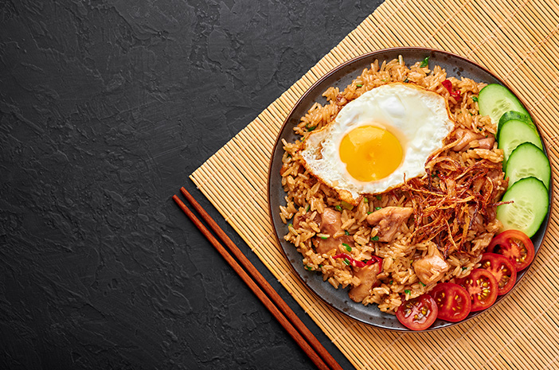
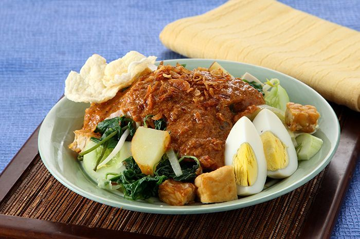
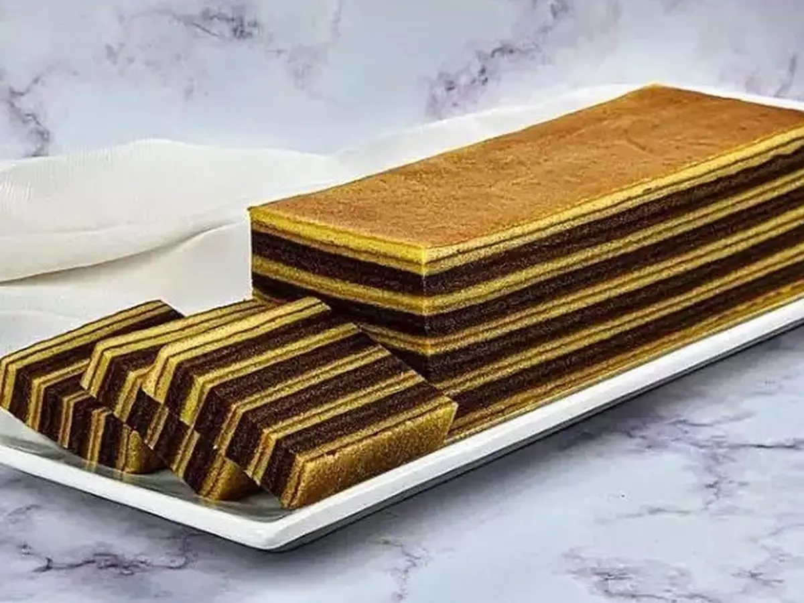

Tentang Kami
nama anggota
delis siti mariam | IXC
fifi indraswari | IXC
Penjelasan Materi
di website ini kita akan membahas tentang resep makanan dari berbagai daerah
Makanan dan Kue Tradisional Indonesia
Indonesia memiliki kekayaan budaya kuliner yang sangat beragam dan kaya akan cita rasa. Makanan dan kue tradisional Indonesia mencerminkan kekayaan alam, keberagaman suku, serta warisan nenek moyang yang telah diwariskan dari generasi ke generasi. Setiap daerah di Indonesia memiliki ciri khas dalam hal bahan, cara pengolahan, dan penyajian makanan, menjadikannya sangat unik dan menarik.
Makanan tradisional Indonesia tidak hanya mengandalkan bahan-bahan lokal yang melimpah, seperti beras, jagung, singkong, kelapa, dan rempah-rempah, tetapi juga kaya akan rasa dan teknik memasak yang bervariasi. Berikut adalah beberapa contoh makanan tradisional yang populer di Indonesia:
Nasi goreng
Rendang

Soto

Gudeg

Gado - Gado
Bakso

Klepon

Onde - Onde

Lapis Legit
Serabi

Putu

Resep Unggulan
Nasi Goreng
Makanan yang terbuat dari nasi yang digoreng dengan berbagai bumbu, sering disajikan dengan telur, ayam, atau udang.
Rendang
Masakan khas Minangkabau yang terbuat dari daging sapi yang dimasak dengan santan dan bumbu rempah.
Soto
Sup berbahan dasar kaldu ayam atau sapi yang disajikan dengan mie, telur, dan sayuran.
Gudeg
Nangka muda yang dimasak dengan santan dan rempah khas Yogyakarta.
Gado - Gado
Salad Indonesia yang terbuat dari sayuran segar, tahu, tempe, dan disiram dengan bumbu kacang.
Bakso
Bola daging yang dibuat dari daging sapi atau ayam, biasanya disajikan dengan mie dan kuah kaldu.
Klepon
Klepon adalah jajanan tradisional berbahan dasar tepung ketan dengan isian gula merah, disajikan dengan parutan kelapa.
Onde-Onde
Onde-onde adalah kue tradisional berbentuk bulat dengan isian kacang hijau, dilapisi wijen di luar.
Lapis Legit
Kue tradisional khas Indonesia dengan tekstur berlapis-lapis dan rasa manis yang khas.
Serabi
Serabi adalah makanan tradisional yang biasanya dimakan dengan kinca, terbuat dari tepung beras dan santan.
Kue Putu
Kue yang dibuat dari tepung beras, diisi gula merah, dan dimasak dalam bambu dengan uap panas.
Hubungi Kami
Untuk bertanya tentang makanan & kue tradisional di website kami, kirim pesan ke nomor kontak berikut:
Hubungi Kami: klik disini